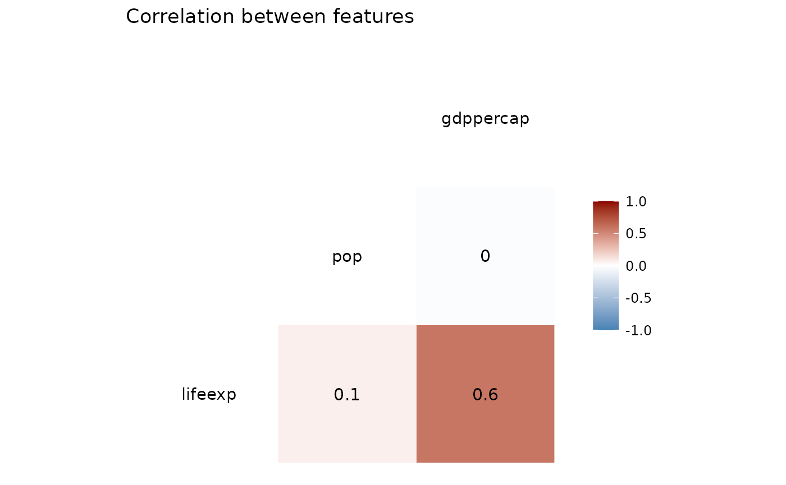
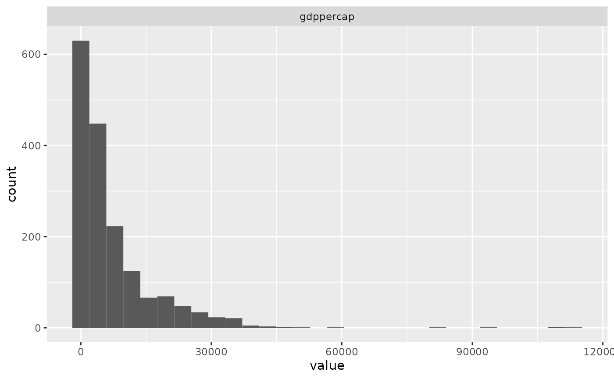

simplerfit-vignette.Rmd
library(simplerfit)Simplerfit is a package that will help reduce effort in each section of a model building pipeline. There are five functions that are included in this R package which are described in more detail below. Seasoned and amateur data scientists’ can use this package in their pipelines to make their tasks more efficient.
This document introduces you to simplerfit’s functions and how to use them.
To explore the basic functionality of simplerfit we use the dataset gapminder. If you want to visualize the data, before going through the functions, use the code below to load it.
# load gapminder dataset
gapminder <- gapminder::gapminder
head(gapminder)
#> # A tibble: 6 × 6
#> country continent year lifeExp pop gdpPercap
#> <fct> <fct> <int> <dbl> <int> <dbl>
#> 1 Afghanistan Asia 1952 28.8 8425333 779.
#> 2 Afghanistan Asia 1957 30.3 9240934 821.
#> 3 Afghanistan Asia 1962 32.0 10267083 853.
#> 4 Afghanistan Asia 1967 34.0 11537966 836.
#> 5 Afghanistan Asia 1972 36.1 13079460 740.
#> 6 Afghanistan Asia 1977 38.4 14880372 786.The cleaner function does the basic cleaning of a raw data-frame by removing the empty rows, stripping extra white spaces in the data and converting the column names to lower case.
clean_df <- clean_data(gapminder)
head(clean_df)
#> # A tibble: 6 × 6
#> country continent year lifeexp pop gdppercap
#> <fct> <fct> <int> <dbl> <int> <dbl>
#> 1 Afghanistan Asia 1952 28.8 8425333 779.
#> 2 Afghanistan Asia 1957 30.3 9240934 821.
#> 3 Afghanistan Asia 1962 32.0 10267083 853.
#> 4 Afghanistan Asia 1967 34.0 11537966 836.
#> 5 Afghanistan Asia 1972 36.1 13079460 740.
#> 6 Afghanistan Asia 1977 38.4 14880372 786.The functions take in the cleaned data set to create a correlation plot and a distribution plot.
plot_corr(clean_df, corr = 'pearson', pair_cols=c('lifeexp', 'pop', 'gdppercap'))
#> Registered S3 method overwritten by 'GGally':
#> method from
#> +.gg ggplot2
plot_distributions(clean_df, bins = 30, hist_cols=c("gdppercap"))
If the problem is of a regression nature, the RMSE scores of dummy regressor, linear regressor and ridge are compared
suppressWarnings(fit_regressor(clean_df,
target_col="gdppercap",
numeric_feats=c("year", "lifeexp", "pop"),
categorical_feats <- c("continent"),
cv =5))
#> Loading required package: ggplot2
#> Loading required package: lattice
#> t=100, m=5
#> t=200, m=6
#> t=300, m=6
#> t=400, m=6
#> t=500, m=5
#> t=600, m=5
#> t=700, m=5
#> t=800, m=6
#> t=900, m=5
#> t=100, m=7
#> t=200, m=6
#> t=300, m=5
#> t=400, m=6
#> t=500, m=5
#> t=600, m=7
#> t=700, m=6
#> t=800, m=6
#> t=900, m=6
#> t=100, m=6
#> t=200, m=6
#> t=300, m=5
#> t=400, m=7
#> t=500, m=4
#> t=600, m=7
#> t=700, m=6
#> t=800, m=5
#> t=900, m=5
#> t=100, m=6
#> t=200, m=5
#> t=300, m=6
#> t=400, m=6
#> t=500, m=4
#> t=600, m=6
#> t=700, m=6
#> t=800, m=4
#> t=900, m=4
#> t=100, m=4
#> t=200, m=6
#> t=300, m=5
#> t=400, m=5
#> t=500, m=4
#> t=600, m=5
#> t=700, m=3
#> t=800, m=4
#> t=900, m=6
#> t=100, m=5
#> t=200, m=6
#> t=300, m=6
#> t=400, m=6
#> t=500, m=6
#> t=600, m=5
#> t=700, m=6
#> t=800, m=6
#> t=900, m=6
#> models Rsquared RMSE
#> 1 Dummy regressor NaN 9758.116
#> 2 Linear regression 0.4021298 7596.120
#> 3 Ridge 0.3774341 7768.282If the problem is of a classification nature, the accuracy scores of dummy classifier and logistic regression are compared
clean_df <- clean_df |> dplyr::filter(continent=="Asia" | continent=="Europe")
clean_df$country <- as.character(clean_df$country)
clean_df$continent <- as.character(clean_df$continent)
clean_df$year <- as.numeric(clean_df$year)
clean_df$pop <- as.numeric(clean_df$pop)
suppressWarnings(fit_classifier(clean_df,
target_col = 'continent',
numeric_feats = list('gdppercap'),
categorical_feats = list('country'),
cv = 5))
#> dummy_classifier logistic_regression
#> 1 0.5238062 1